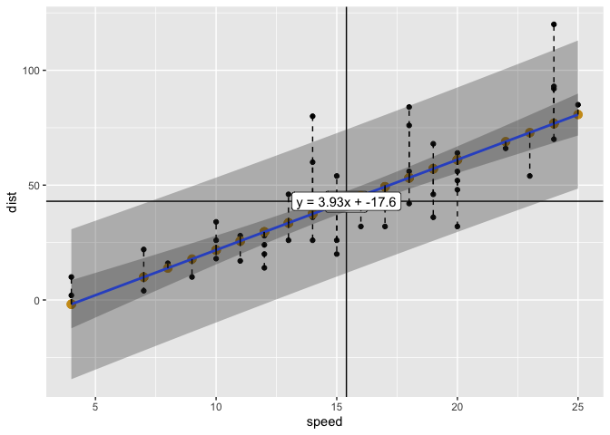
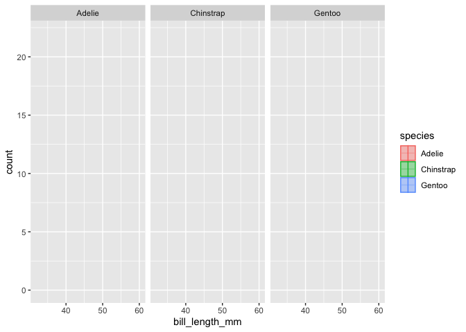
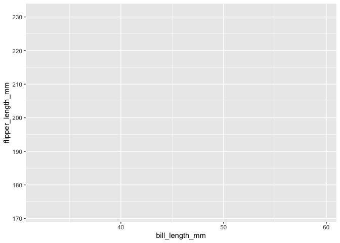

The goal of ggxmean is plot the mean of x - and some other things like y!
Installation
The development version from GitHub with:
# install.packages("devtools")
devtools::install_github("EvaMaeRey/ggxmean")Examples

# knitr::opts_chunk$set(eval = F)
options(gganimate.nframes = 60)
library(tidyverse)
library(ggxmean)
#library(transformr) might help w/ animate
## basic example code
cars %>%
ggplot() +
aes(x = speed,
y = dist) +
geom_point() +
ggxmean::geom_x_mean() +
ggxmean::geom_x_mean_label() +
ggxmean::geom_y_mean() +
ggxmean::geom_xy_means(color = "red",
size = 5) +
ggxmean::geom_lm_fitted(color = "goldenrod3",
size = 3) +
ggxmean::geom_lm_pred_int() +
ggxmean::geom_lm() +
ggxmean::geom_lm_residuals(linetype = "dashed") +
ggxmean::geom_lm_conf_int() +
ggxmean::geom_lm_formula()
palmerpenguins::penguins %>%
ggplot() +
aes(x = bill_length_mm) +
geom_rug(alpha = .3) +
geom_histogram(alpha = .4) +
geom_x_mean() +
aes(fill = species) + # unexpected behavior here
aes(color = species) +
facet_wrap(facets = vars(species)) +
gganimate::transition_layers()
library(ggxmean)
palmerpenguins::penguins %>%
drop_na() %>%
ggplot() +
aes(x = bill_length_mm) +
aes(y = flipper_length_mm) +
geom_point() +
ggxmean:::geom_x_mean() +
ggxmean:::geom_y_mean() +
ggxmean:::geom_y_line(alpha = .02) +
ggxmean:::geom_x_line(alpha = .02) +
ggxmean:::geom_xdiff() +
ggxmean:::geom_ydiff() +
ggxmean:::geom_x1sd(linetype = "dashed") +
ggxmean:::geom_y1sd(linetype = "dashed") +
ggxmean:::geom_diffsmultiplied() +
ggxmean:::geom_xydiffsmean(alpha = 1) +
ggxmean:::geom_rsq1() +
ggxmean:::geom_corrlabel() +
gganimate::transition_layers()